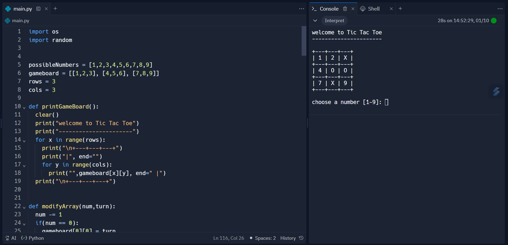

Programming Language

Bahasa Pemrograman atau biasa disebut dengan programming language,
merupakan suatu himpunan dari aturan sintaks dan semantik yang dipakai untuk mendefinisikan program komputer.
-- Hold on,kalau penjelasan diatas apakah kalian akan langsung memahami? atau langsung menganggap ini bukan bidang kalian?
oke.. Sekarang,Lanjut ..
begini mari kita bayangkan dari istilahnya terlebih dahulu,bahasa pemrograman?
sama seperti bahasa inggris,bahasa indonesia,dan bahasa-bahasa lainnya,digunakan untuk berkomunikasi bukan?
That's The Reason dari Gambar yang dimuat diatas,bentuknya alat komunikasi
coba bayangin kalian mau ngobrol sama orang inggris tapi menggunakan bahasa indonesia?
kira kira mereka paham ga sama apa yang kalian omongin?of course,-No!
kenapa?
karena bahasa yang kalian gunakan bukan bahasa yang sama sama kalian mengerti,lalu bagaimana?
Nah!,begitu pun dengan bahasa pemrograman,ini juga sebagai cara kita berkomunikasi dengan program atau komputer,
karena kita ingin memberikan intruksi,menyuruh komputer menjumlahkan angka atau menampilkan data,dan itu hanya bisa dicapai ketika kita bisa berkomunikasi dengannya.
maka harus kita yang belajar bahasa yang dimengerti oleh komputer kan!?
oke,sekarang saya akan jelaskan beberapa contoh bahasa pemrograman yang bisa anda gunakan dan pelajari.
Python
Python adalah bahasa pemrograman serbaguna yang bisa dijalankan pada hampir semua arsitektur sistem,
mulai dari web development hingga machine learning.
Python juga dikenal dengan syntax nya yang lebih mudah untuk dimengerti oleh para pemula,
sebagai basic development untuk dipelajari,saya cukup merekomendasikan python,dari segi syntax,algorithm dan sequence
python memberikan kita leluasa untuk mengatur dan memahami nya lebih mudah dan cukup efisien.
Dengan menggunakan Python, kita bisa membuat program untuk melakukan berbagai hal, mulai dipelajari
perhitungan matematika, manipulasi teks, hingga pengembangan aplikasi web,Game,dan kecerdasan buatan.
Python menjadi pilihan populer karena kemudahan penggunaannya dan-,
memiliki banyak pustaka (libraries) yang mendukung berbagai fungsi dan kebutuhan pengembangan perangkat lunak.

Salah satu contoh membuat game Tic-Tac-Toe menggunakan python
Web Development
Web development (pengembangan web) adalah proses membangun dan memelihara situs web atau aplikasi web.
Ini melibatkan serangkaian kegiatan yang melibatkan desain,pengembangan, dan pemeliharaan elemen-elemen yang membuat situs web berfungsi dan terlihat baik.
Web Development membutuhkan banyak proses yang berkaitan satu sama lain
oke,let's See beberapa part penting yang bisa saya jelaskan sedikit disini
Front End Development
Bagian dari pengembangan web yang fokus pada tampilan dan interaksi pengguna.
Back End Development
Bagian dari pengembangan web yang berkaitan dengan server, database, dan logika aplikasi.
Responsive Design
User Interaction
maintenance (pemeliharaan)
oke,kita masuk ke 'How to build a website' :
Html/Css

Html salah satu bahasa yang berperan penting ketika ingin membangun sebuah website.
HTML tidak dianggap sebagai bahasa pemrograman karena tidak bisa memberikan fungsi yang dinamis.
Sekarang, bahasa markup ini dianggap sebagai standar web resmi,dan karena itu kita bisa membayangkan html sebagai kerangka dari sebuah benda maupun hewan,
Tentu sangat penting bukan?
Nah,Laluu bagaimana dengan Css yang berperan sebagai fashion stylist?
Tentu Benar css berperan sebagai fashion stylist,atau mungkin seperti memasak tanpa garam?
Sebenarnya,sah-sah saja untuk membangun sebuah website tanpa css
tetapi tentu kamu tidak memanjakan mata para user yang menggunakannya,iya seperti kamu menonton film hitam putih tak beraturan,memang bisa berjalan,tetapi tentu terasa kurang lengkap.
JavaScript
dan terakhir ada si otak dari web development,bayangkan kerangka mobil yang sudah sangat kokoh laluu ditambah dengan design yang sangat apik
tetapi tidak bisa bergerak,tidak bisa digunakan dengan baik,hanya menjadi sebuah pajangan semata? tentu mengecewakan sekali.
masih banyak sebenarnya yang ingin saya bahas di article ini,tetapi untuk kali ini kita akan akhiri disini,dan semoga bertemu kembali di versi updated article ini!